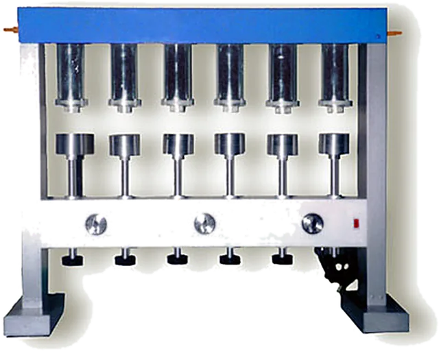
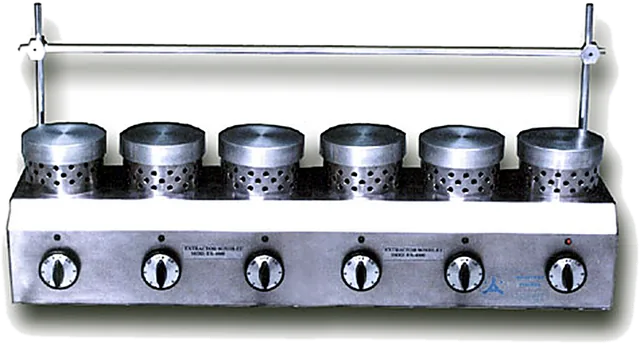
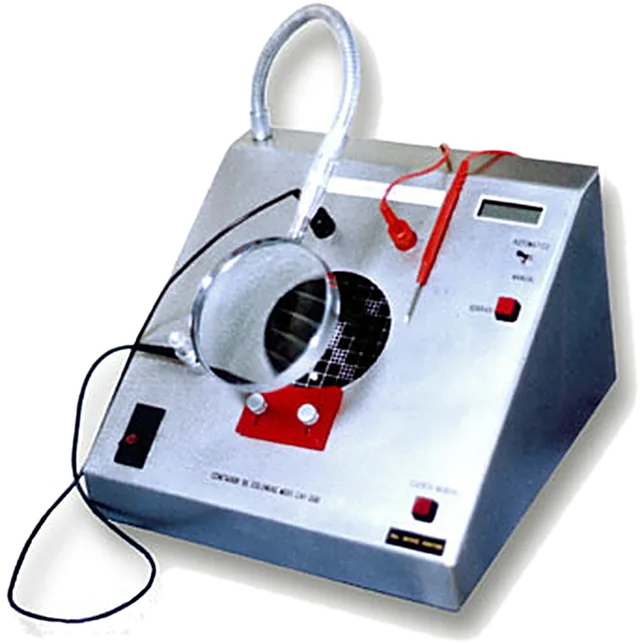
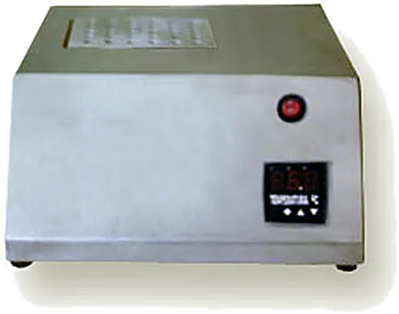
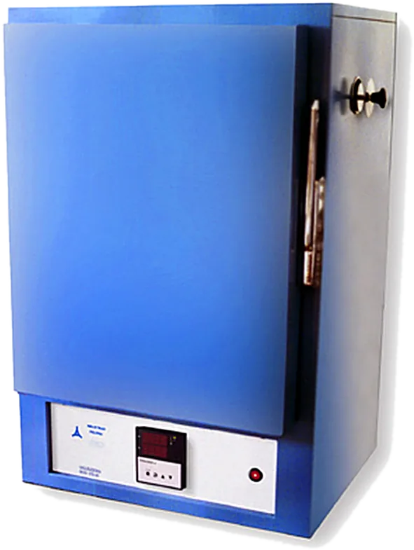
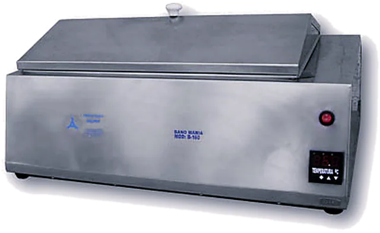
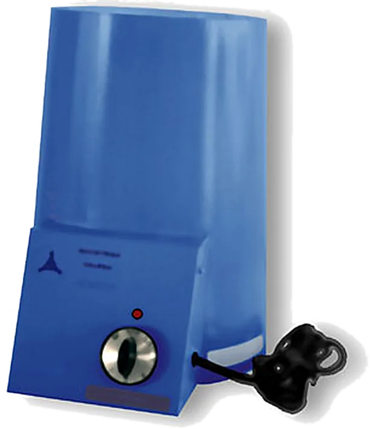
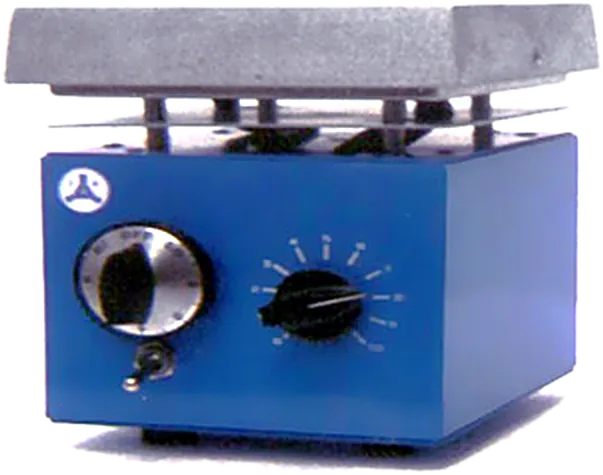
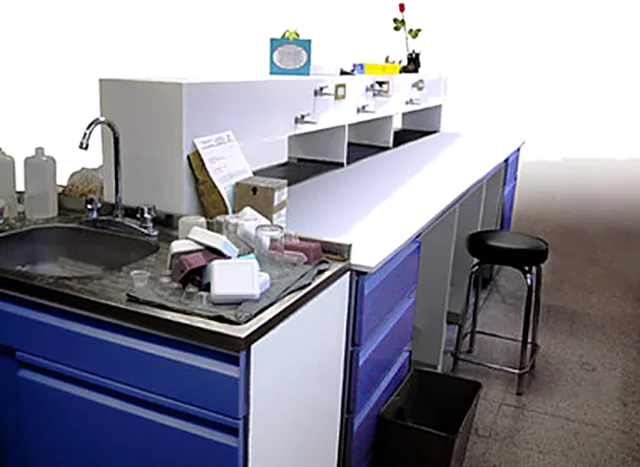

Products
Equipment made by FIGURSA in Mexico. Choose a line or search for a model.
Product lines

Sterilization
Autoclaves
Steam sterilization for laboratories, clinics and industry.
Works with FIGURSA CloudView 8 models
Sterile work areas
Laminar flow hoods
A sterile work zone with horizontal or vertical flow and HEPA filtration.
Works with FIGURSA CloudView 8 models
Controlled environment
Climate chambers
Controlled temperature and humidity for stability, ageing and growth studies.
Works with FIGURSA CloudView 8 models
Operator safety
Fume hoods
Operator protection during digestions, distillations and reagent preparation.
View 11 models
Food analysis
Kjeldahl apparatus
Digestion and distillation for protein and nitrogen determination.
View 9 models
Food analysis
Goldfisch fat extractors
Fast determination of fats and oils by solvent extraction.
View the modelFood analysis
Crude fiber apparatus
Crude fiber in feed, food and agricultural products by reflux.
View the model
Food analysis
Soxhlet extractors
Six heating units for extractions, distillations and digestions.
View the model
Culture
Incubators
Culture incubators: forced-air, BOD, low-temperature and orbital.
View 26 models
Culture
Colony counters
Counting bacterial colonies on Petri dishes, manual or electronic.
View 4 models
Culture
Dry-block tube incubators
Dry blocks from ambient to 130 °C, 1 to 6 blocks.
View 5 modelsCulture
Tube rotators
Gentle, constant mixing in every plane for tubes of several sizes.
View the modelPhysicochemical testing
Melting-point apparatus
Digital capillary up to 199.9 or 350 °C, or hot stage up to 300 °C.
View 3 modelsPhysicochemical testing
Pensky-Martens closed cup
Flash point of petroleum products to ASTM D 93.
View the model
Drying
Drying ovens
Drying and dry sterilization up to 300 °C, with forced air or vacuum.
View 11 models
Constant temperature
Water baths
Constant temperature for tubes, circulation, shaking and tissue flotation.
View 13 models
Heating
Heating mantles
For round-bottom flasks from 50 mL to 22 L and resin reactors.
View 19 models
Heating and stirring
Hot plates and stirrers
Hot plates, magnetic stirrers and combined units.
View 9 models
Projects
Laboratory furniture
Modular furniture designed for your laboratory.
View the modelNo equipment matches the search.
Describe what you needModel index
| Model | Product | Specifications |
|---|---|---|
| AV-2550 | Vertical autoclave | Manual, 3 heat settings · 25 × 50 cm |
| AV-3060 | Vertical autoclave | Manual, 3 heat settings · 30 × 60 cm |
| AV-3560 | Vertical autoclave | Manual, 3 heat settings · 35 × 60 cm |
| AVA-2550 | Vertical autoclave | Automatic · 25 × 50 cm |
| AVA-3060 | Vertical autoclave | Automatic · 30 × 60 cm |
| AVAD-2550 | Vertical autoclave | Digital with timer · 25 × 50 cm |
| AVAD-3060 | Vertical autoclave | Digital with timer · 30 × 60 cm |
| AVAD-3560 | Vertical autoclave | Digital with timer · 35 × 60 cm |
| CFH-60 | Laminar flow hood | Horizontal · 67 × 80 × 200 cm |
| CFV-60 | Laminar flow hood | Vertical · 67 × 80 × 200 cm |
| CFH-90 | Laminar flow hood | Horizontal · 97 × 80 × 200 cm |
| CFV-90 | Laminar flow hood | Vertical · 97 × 80 × 200 cm |
| CFH-120 | Laminar flow hood | Horizontal · 127 × 80 × 200 cm |
| CFV-120 | Laminar flow hood | Vertical · 127 × 80 × 200 cm |
| CFH-180 | Laminar flow hood | Horizontal · 187 × 80 × 200 cm |
| CFV-180 | Laminar flow hood | Vertical · 187 × 80 × 200 cm |
| CH-6040 | Temperature and humidity chamber | 60 × 40 × 30 cm · 72 L |
| CH-6050 | Temperature and humidity chamber | 60 × 50 × 35 cm · 105 L |
| CH-6070 | Temperature and humidity chamber | 60 × 70 × 40 cm · 168 L |
| CH-7080 | Temperature and humidity chamber | 70 × 80 × 55 cm · 308 L |
| CH-7090 | Temperature and humidity chamber | 70 × 90 × 60 cm · 378 L |
| CH-7150 | Temperature and humidity chamber | 70 × 150 × 60 cm · 630 L |
| CH-9155 | Temperature and humidity chamber | 90 × 155 × 70 cm · 976 L |
| GERMINADOR-388 | Temperature and humidity chamber | 58 × 147 × 57 cm · 793 L (28 ft³) |
| CE-60 | Fume hood | Bench-top, no cabinet or services · 80 × 76 × 117 cm |
| CE-90 | Fume hood | Bench-top, no cabinet or services · 110 × 76 × 117 cm |
| CE-120 | Fume hood | Bench-top, no cabinet or services · 140 × 76 × 117 cm |
| CE-150 | Fume hood | Bench-top, no cabinet or services · 170 × 76 × 117 cm |
| CE-180 | Fume hood | Bench-top, no cabinet or services · 200 × 76 × 117 cm |
| CEG-60 | Fume hood | With base cabinet and services · 80 × 76 × 210 cm |
| CEG-90 | Fume hood | With base cabinet and services · 110 × 76 × 210 cm |
| CEG-120 | Fume hood | With base cabinet and services · 140 × 76 × 210 cm |
| CEG-150 | Fume hood | With base cabinet and services · 170 × 76 × 210 cm |
| CEG-180 | Fume hood | With base cabinet and services · 200 × 76 × 210 cm |
| CEG-240 | Fume hood | With rack for pilot tests · 240 × 76 × 220 cm |
| DMK-650 | Kjeldahl apparatus | Micro distiller · 1 |
| DGMK-630 | Kjeldahl apparatus | Micro digester · 6 |
| DK-2500 | Kjeldahl apparatus | Distiller, 500 to 800 mL flasks · 2 |
| DGK-2800 | Kjeldahl apparatus | Digester, 500 to 800 mL flasks · 2 |
| KC-3000 | Kjeldahl apparatus | Combined digestion and distillation · 2 |
| DK-6500 | Kjeldahl apparatus | Distiller, 500 to 800 mL flasks · 6 |
| DGK-6800 | Kjeldahl apparatus | Digester, 500 to 800 mL flasks · 6 |
| KC-12500 | Kjeldahl apparatus | Combined digestion and distillation · 6 |
| KC-24800 | Kjeldahl apparatus | Combined digestion and distillation · 12 |
| EG-4000 | Goldfisch fat extractor | 6 · 68 × 91 × 23 cm |
| EFC-6000 | Crude fiber apparatus | 6 · 2100 W |
| ES-5000 | Soxhlet extractor | 6 · 600 W |
| I-35 | Incubator | Standard, stainless · Ambient to 70 °C |
| I-45 | Incubator | Standard, stainless · Ambient to 70 °C |
| I-60 | Incubator | Standard, stainless · Ambient to 70 °C |
| I-70 | Incubator | Standard, stainless · Ambient to 70 °C |
| IFD-35 | Incubator | Forced air · Ambient to 70 °C |
| IFD-45 | Incubator | Forced air · Ambient to 70 °C |
| IFD-60 | Incubator | Forced air · Ambient to 70 °C |
| IFD-70 | Incubator | Forced air · Ambient to 70 °C |
| IFD-100 | Incubator | Forced air · Ambient to 70 °C |
| IDB-50 | Incubator | BOD, refrigerated · 0 to 50 °C |
| IDB-100 | Incubator | BOD, refrigerated · 0 to 50 °C |
| IDB-200 | Incubator | BOD, refrigerated · 0 to 50 °C |
| IDB-300 | Incubator | BOD, refrigerated · 0 to 50 °C |
| IBTF-050 | Incubator | Low temperature · −10 to 50 °C |
| IBTF-100 | Incubator | Low temperature · −10 to 50 °C |
| IBTF-200 | Incubator | Low temperature · −10 to 50 °C |
| IBTF-300 | Incubator | Low temperature · −10 to 50 °C |
| IOD-500 | Incubator | Orbital shaker · Ambient to 70 °C |
| IOD-600 | Incubator | Orbital shaker · Ambient to 70 °C |
| IOPD-700 | Incubator | Orbital shaker · Ambient to 70 °C |
| IOPD-800 | Incubator | Orbital shaker · Ambient to 70 °C |
| IOPRD-900 | Incubator | Orbital shaker · Refrigerated |
| IE-35 | Incubator | Economy series, aluminium · Ambient to 70 °C |
| IE-45 | Incubator | Economy series, aluminium · Ambient to 70 °C |
| IE-60 | Incubator | Economy series, aluminium · Ambient to 70 °C |
| IE-70 | Incubator | Economy series, aluminium · Ambient to 70 °C |
| CMF-300 | Colony counter | Enamelled · Manual button |
| CMI-3000 | Colony counter | Stainless steel · Manual button |
| CMF-3100 | Colony counter | Stainless steel · Manual button |
| CAF-3500 | Colony counter | Stainless steel · Contact pen, manual or automatic |
| ITS-1B | Dry-block tube incubator | 1 · 100 W |
| ITS-2B | Dry-block tube incubator | 2 · 150 W |
| ITS-3B | Dry-block tube incubator | 3 · 200 W |
| ITS-4B | Dry-block tube incubator | 4 · 300 W |
| ITS-6B | Dry-block tube incubator | 6 · 400 W |
| RT-1224 | Tube rotator | 18 rpm · 12 holders |
| PF-2000 | Melting-point apparatus | Digital capillary · Ambient to 199.9 °C |
| PF-3500 | Melting-point apparatus | Digital capillary · Ambient to 350 °C |
| PF-1400 | Melting-point apparatus | Hot stage · Thermometer 20 to 300 °C |
| CPE-2600 | Pensky-Martens closed-cup tester | ASTM D 93 · 750 W |
| HD-35 | Drying oven | Stainless steel · 35 × 35 × 35 cm |
| HD-40 | Drying oven | Stainless steel · 45 × 45 × 40 cm |
| HD-55 | Drying oven | Stainless steel · 60 × 50 × 50 cm |
| HFD-28 | Drying oven | Forced air · 28 × 30 × 35 cm |
| HFD-33 | Drying oven | Forced air · 33 × 40 × 40 cm |
| HFD-48 | Drying oven | Forced air · 48 × 45 × 50 cm |
| HFD-60 | Drying oven | Forced air · 60 × 45 × 45 cm |
| HFD-88 | Drying oven | Forced air · 88 × 75 × 60 cm |
| HE-35 | Drying oven | Economy series, aluminium · 35 × 35 × 35 cm |
| HE-40 | Drying oven | Economy series, aluminium · 45 × 45 × 40 cm |
| HE-55 | Drying oven | Economy series, aluminium · 60 × 50 × 50 cm |
| BD-020 | Water bath | For 20 tubes · 14 × 13 × 15 cm |
| BD-040 | Water bath | For 40 tubes · 23 × 13 × 15 cm |
| BD-050 | Water bath | For 50 tubes · 29 × 14 × 15 cm |
| BD-100 | Water bath | For 100 tubes · 29 × 23 × 15 cm |
| BD-160 | Water bath | For 160 tubes · 50 × 29 × 15 cm |
| BCD-100 | Water bath | With circulation pump · 29 × 23 × 13 cm |
| BCD-160 | Water bath | With circulation pump · 50 × 29 × 15 cm |
| BCRD-100 | Water bath | Circulating, refrigerated · 29 × 14 × 15 cm |
| BAD-415 | Water bath | 4 concentric rings, 15 cm · — |
| BAD-420 | Water bath | 4 concentric rings, 20 cm · — |
| BFD-230 | Water bath | Tissue flotation · — |
| BMOD-200 | Water bath | Oscillating motion, acrylic lid · — |
| BMRD-400 | Water bath | Reciprocating motion, acrylic lid · — |
| MCI-050 | Heating mantle | 50 mL |
| MCI-100 | Heating mantle | 100 mL |
| MCI-125 | Heating mantle | 125 mL |
| MCI-200 | Heating mantle | 200 mL |
| MCI-250 | Heating mantle | 250 mL |
| MCI-300 | Heating mantle | 300 mL |
| MCI-500 | Heating mantle | 500 mL |
| MCI-1000 | Heating mantle | 1 L |
| MCI-2000 | Heating mantle | 2 L |
| MCI-3000 | Heating mantle | 3 L |
| MCI-4000 | Heating mantle | 4 L |
| MCI-5000 | Heating mantle | 5 L |
| MCI-12000 | Heating mantle | 12 L |
| MCI-22000 | Heating mantle | 22 L |
| MRI-500 | Heating mantle | 500 mL · reactor |
| MRI-1000 | Heating mantle | 1 L · reactor |
| MRI-2000 | Heating mantle | 2 L · reactor |
| MRI-3000 | Heating mantle | 3 L · reactor |
| MRI-4000 | Heating mantle | 4 L · reactor |
| PC-1515 | Hot plate | Heating, 15 × 15 cm |
| PC-2025 | Hot plate | Heating, 20 × 25 cm |
| PC-2530 | Hot plate | Heating, 25 × 30 cm |
| PC-3060 | Hot plate | Heating, 30 × 60 cm |
| PC-15080 | Hot plate | Heating, stainless base on refractory porcelain |
| PA-1515 | Hot plate | Stirrer, 15 × 15 cm |
| PA-2025 | Hot plate | Stirrer, 20 × 25 cm |
| PCA-1515 | Hot plate | Heating and stirring, 15 × 15 cm |
| PCA-2025 | Hot plate | Heating and stirring, 20 × 25 cm |
| CARRO-UTILITARIO | Modular furniture | Cart with two T-304 stainless shelves; 1" tubing with epoxy primer and black polyurethane finish; aluminium corners and 4" casters; 180 kg total capacity · 41 × 80 × 91 cm |